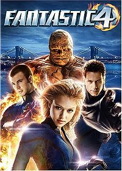
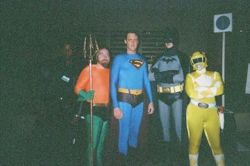
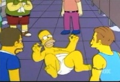
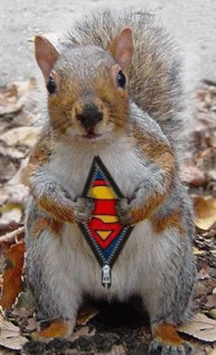
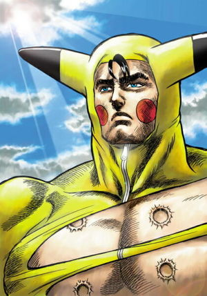

Los 4 Fanáticos
 De: La Frikipedia, la enciclopedia extremadamente seria.
De: La Frikipedia, la enciclopedia extremadamente seria.
| De la serie Superhéroes:
|
| Los 4 Fanáticos
|
| 
|
| De izquierda a derecha: El algo, el Hombre Condón, el mechero y la Mujer Inexistente.
|
|
| Nacimiento:
|
1961
|
| Muerte:
|
Pendiente
|
| Superpoderes:
|
De condon, mechero, cemento y nada.
|
| Debilidad:
|
SIDA, Agua, Mala Mezcla y nada
|
| Asistente
|
Silver Surfer
|
| Notas:
|
Si se unen se hace un condon pre-usado hecho de piedra y además es invisible.
|
 De izquierda a derecha: El algo, el Hombre Condón, el mechero y la Mujer Inexistente
- El patada, pero no fue así. Él casi muere, pero antes de su muerte a su mujer le dijo que le hiciese un último favor: que en Halloween se comprase una careta, al menos con ella puesta seria algo más guapa... Pero el algo no está deprimido, no, con el hombre condon se va a buscar el amor verdadero por la calles de Desesperado's City, una ciudad de hombres y mujeres desesperados por que alguien como el mechero las ponga un poco calientes.
 Homer intentando imitar a el Hombre Condon, sin resultado
- El mechero: Un joven desesperado de unos 18 o 19 años. El pobre no puede tener una relación decente ya que cada vez que se excita se convierte en fuego. Y claro, sus novias no son a prueba de fuego, son a prueba de hombres condones. Otro dato sobre este tremendo retrasado super héroe es que cada vez que se masturba la fricción provocada lo enciende en llamas. Pero las mujeres se le deben de estar agradecido, una mujer al acercarse a él ya debería de estar caliente. Además de que el mechero se acuesta con cualquier animal, ya sea perro, ciervo, elefante, leon, tigre panda, guepardo, gorrion, aguila, Rappel, veneno, duquesa de Alba o cualquier animal o persona que quiera sexo gratis y barato. Pero el hombre Condón se lo impidió, ya que le quitaba clientela, y el la necesitaba para sobrevivir en su vida de condón. Por eso El Mechero sólo se acuesta con viejas, como Zohan.
Los miembros de the four horsemen, aunque no tienen nada que ver son 4 tambien
- El Hombre Condón: Un tío cuyo único superpoder es estirarse como un Condón. Es un mito sexual, pero lo malo es que no puede tener hijos, debido a 2 razones: es de látex, y no puede estar erecto. Pero el hombre condón no se rinde, acude siempre a salas de sexo y sexshops para encontarr el amor verdadero, pero normalmente lo que siempre encuentra en esos sitios son cosas que no deberia de haber visto en la vida. Debido a estas experiencias, el Hombre Condón tiene traumas, como haber visto en una película porno a Bruce Lee y a su madre, juntos, y lo peor es que su madre parecía que estaba disfrutando. Desde ese momento el hombre condón no se habla con su madre, la mujer de la esquina (no la busqueis, la mujer inexistente la enseñó a hacerse invisible). Pero el hombre condón no para de afrontarlo, y, si quieres sexo seguro, acude a El Hombre Condón. PD: tiene anuncios puestos en los periódicos, puestos de golosinas, expendedores de cosas que ayudan a la naturaleza en los baños públicos y postes de luz.
- La mujer inexistente: Su nombre se debe a que desde que ella y sus compañeros obtuvieron poderes, es invisible y todos ignoran por completo su existencia. Además de estar demasiado buena y que le daría masa hasta matarla utiliza su poder para colarse en orgías y se denota su presencia cuando alguien le acaba en el cuerpo y se ve una leche andante paseándose por la habitación. Lo malo es que el Hombre condón no puede verla, así que se desespera, por eso tiene tantos anuncios por todos lados, pero la mujer inexistente era la mujer existente hasta que conocio a un hombre que la dijo que queria que ella fuese su mujer. Ella muy indignada la dijo que NO, porque era muy delicada, y desde ese momento se volvio invisible, pero en realidad utiliza una frikada de Doraemon que la hace invisible, Novita se cabreó así que mató a Doraemon y ella teme volverse visible, aunque cuando se cuela en orgías, lo pasa bien entre roce y roce
Origen e historia de los 4 Fanáticos
- El patada giratoria de Chuck Norris, esta vez no le perdonó la vida. Cuando el algo fue al cielo, se encontró con Dios, y le pegó una patada al algo y lo envió al infierno, a que viese desnudas a la bruja lola, a la veneno, a la duquesa de alba y a rappel y que tuvese pesadillas sobre ellos. Pero cuando cumpliese su condena de haber retado a Bruce Lee, de 5.000.000 de años en el infierno, el Diablo le obligaria a acostarse con la duquesa de alba. Acto seguido, The Boogeyman le obligaría a hacer actos impuros...
- El mechero:Pues nació de una flatulencia tirándose a la madre de El Hombre Condón. El resultado fue este aborigen de 1'20 que no puede cometer ctos impuros. Por eso The Boogeyman intentó educarlo en su sexualidad, pero no resultó. Entonces el mechero se propuso ir por el mundo en busca de el valhala, algo que no pudo ser, entonces se propuso ir por el mundo. Descubrió muchas cosas, estuvo en la guerra de Vietnam, en la de Irak y en la de tu casa cuando tu padre y tu madre están en la cama pasándolo bien. El mechero tiene ya 120 años, y se ha propuesto ir de ciudad en ciudad a ver si encuentra a alguien que le haga compañía hasta que se le acabe el gas que tiene. Cuando en uno de esos viajes se encontró con el Fary, planearon hacerse con el mundo poniéndose rastas y aburriendo a la gente con ssu música. Iban en una furgoneta impulsada a gas (Alquiler de furgonetas Manolo, si quieres una furgoneta ya sea a gas a gasolina a cerveza o a pedales, llame a Manolo, su alquilador de furgonetas, 999-999-999) por el propio mechero.
 superman al descubrir su nueva identidad frente a el hombre condon
- El Hombre Condón:El nacimiento de este ser raro lo dice su propio nombre, nacio de un hombre, y una mujer, lo que pasa es que se les rompió el condón. Entonces cuando la mujer estaba embarazada tenía un antojo de condón. No le quisieron satisfacer las necesidades biológicas, y nacio este ser.Cuando era joven, el hombre condon trató de buscar a la mujer condon, pero como no existia, entonces trato de buscar a la mujer diú. Cuando la encontró, había una probabilidad de -100% de tener un hijo, asi que el hijo los tuvo a ellos, pero da igual, el hombre condon y la mujer diu son felices. Cuando el hombre condon cumplio los 30, el hombre condon conocio a el mechero, el cual estaba en Condonlandia, de vacaciones a ver si encontraba una mujer decente. La mujer diu le puso los cuernos a el Hombre condon con otro hombre (condon) asi que el hombre condon cogio a su hijo, y se largo de casa. Cuando se largo dio tal portazo que se le quedo pillada la "cabeza" de condon que tiene. Estuvo 3 meses en rehabilitacion, pero salio bien. Cuando estaban en la salida del hospital, se encontraron nada mas y nada menos que con una ardillita muy muy mona, la cual al final, era superman. Los 2 lucharon ferozmente, y al final, ganó el hombre condon. El algo los vio y se unio a su equipo. Ya era 3, y decidieron que salvarian el mundo.
 Pikachu exhausto tras luchar contra los 4 Fanáticos
- La mujer inexistente:La mujer inexistente nacio de un trio entre un borracho, una madre desesperada y Dios.Cuando la madre desesperada tuvo a la mujer inexistente, Dios la mató por fea. La mujerinexistente dio pena a Dios, el cual la crio y educo, pero al ver que no podia hacer una patada giratoria, la dio una patada giratoria y la envió con patada giratoria antes de que dijese lo que quería allí. Encontró, y entonces se reonciliaron. En un viaje, se encontró con El Algo, El Hombre Condón y El mechero. Entonces se aliaron, y ahora se encuentran luchando por poder derrotar a Pikachu y a todos los pokemons.
Los 4 Satánicos
Aquí tenemos a los 4 satánicos dominando el mundo. De izquierda a derecha: el emo, el rockero, el jebi (su pelo lo dice todo) y el punk
Los 4 Satánicos son un grupo copia de los 4 Fanáticos. En realidad, aunque sean copias, los 4 Fanáticos y ellos están luchando por dominar el mundo. Dios se ocupa de Pikachu, mientras que los 4 fanáticos se ocupan de los 4 satánicos. Segun fuentes oficiales, ya se sabe la procedencia de esta banda que se ocupa de Dominar el Mundo. Están hechos de 1 emo, 1 jebi, 1 rockero y 1 punk. Tambien se sabe como nacieron, y qué hicieron a lo largo de la vida, así cómo se conocieron:
- El Emo: Su procedencia no es muy exacta, pero cuando nació, su madre murió por falta de sangre, ya que su hija la cortó las venas. Se educó según su padre, muy duramente. Hacia un horario de cortes de venas puntual:
- -00:00-Cortarse las venas
- -00:20-Ir a un hospital
- -03:00-Dormir en la cama del hospital
- -12:00-Desayunar
- -12:20-El corte de venas de despues del desayuno
- -13:00-Transfusion en hospital
- -14:00-Comer viendo Los simpsons version Emo
- -14:30-Corte de venas de despues de comer
- -17:00-Vuelta a casa del hospital
- -18:00-Merendar
- -18:30-corte de venas de despues de merendar
- -22:00-Vuelta a casa del hospital
- -22:10-Cenar
- -22:30-Quejarse de que la vida es una mierda
- -00:00-Cortarse las venas
Y asi se tira todos los días hasta los 16 años. A esa edad, descubrió su amor verdadero: una navaja con joyas engarzadas. Pero como no se la quisieron comprar la robó. Lo pillaron, y lo llevaron a un reformatorio. Ahí se formó, y decidio que se vengaria dominando el mundo. A los 18, fue a la carcel y ahí creo un ejercito de Emos. Cuando pretendió dominar el mundo, había un obstáculo: El fary en su época rasta, junto con su amigo el Mechero. Los destruyeron, y entonces va en busca de un ejército invencible.
- El Jebi:El jebi nacio de un padre rockero y una madre emo. El hijo nació jebi y con ganas de escuchar musica. Asi era que de pequeño tenía todas las canciones de las bandas jebis. A los 5 años le compraron una guitarra, pero era defectuosa y le dio una descarga mortal. Le tuvieron que ingresar en un hospital, pero el no se rindio. Sacaba malas notas, pero a el lo unico que le importaba era la banda. No contento con eso, a los 12 años creó una banda jebi, pero no dio resultado. A continuacion, desafio a Dios, a ver quien tenia el pelo mas largo. Bruce Lee hizo crecer su pelo tanto que hizo que el jebi se tropezase y muriese. Se encontró con la cosa en el infierno, justo cuando se iba. El jebi hizo sufrir a todoi el infierno con su musica desastrosa, asi que le soltaron y revivio convertido en un cantante jebi. Pero el aun queria conquistar el mundo, pero se encontro con un obstaculo: Era Bruce Lee otra vez. Le retó, pero esta vez sabia que le ganaría. El reto era a ver a quien se le salia la melena dandola vueltas con la cabeza, pero no habia tenido una cosa en cuenta, y era que el hombre en quién se había reencarnado era calvo. Humillado conoció al emo, el cual también quería conquistar el mundo, y así empezaron el ejército.
- El rockero:El rockero nació de una madre jebi y un padre de una tribu friki. Cuando tenía 4 años se había dejado el pelo hasta la cintura, y se ligaba a todas las chicas que quería. Cuando tenía 5 años y medio, se declaró pelo pantene 1985, y a la vez entró en el libro guiness de los records por tener más pulgas por cm2. Cuando cumplió los 20, ya tenía su propia banda de rock, se llamaban los chupadores de p...iernas, un grupo con éxito, pero la avaricia los llevó a la ruina. Desde entonces se quiere vengar de el mundo destruyéndolo y tratándolo de dominar. No sabía qué hacer. Así que conoció a el jebi y el emo, los cuales estaban formando un ejército para dominar el mundo. El rockero se unió y asi trataron de Dominar el Mundo. Empezaron haciendo fechorías, pero siguieron haciendo cosas de los chinos defectuosas, así los chinos se arruinaron, eran muy malotes, así que ahora hicieron comida mala en un restaurante, el restaurante se arruinó, ahora eran más malotes, pero ellos querían ir más lejos, mucho más lejos, ellos querían hacer cigarrillos con sabor a melocotón, así serían muy malotes, y demostrarían su poder. Pero en medio había un problema: George Bush, que les dijo que si intentaban Dominar el Mundo, conquistaría Irak. Y así fue. Fueron derrotados, pero nunca se riendieron y siguieron adelante.
- El punk: El punk ha vivido toda su vida aislado, a los 4 años, en el colegio, estaba lleno de chapas. Cuando cumplió los 12 años, se declaró de la especie punk de palo, y se puso la ropa que entonces llevaría toda su vida. Cuando cumplió los 15 años, tuvo una novia, a la que sacaba 2 cabezas debido a su pelo un poco subido hacia arriba. Cortó con ella porque decía que no era capaz de convertirse a emo, y así fue. Cuando cumplió los 20, se le descosió la ropa que tenía, entonces por 3 meses se pasó a ser emo, aunque no le gustó porque los emos se cambiaban de ropa y llevaban el pelo raro. A los 30, conoció a el jebi, el rockero y el emo, y entonces les dijo su propósito: Dominar el Mundo. En esto coincidió con los otros 3, por eso, despues de la misión fracasada, pasaron al plan B: Conquistar Irak. El plan les salió mal debido a que no tenían billetes de avión para ir a Irak. Entonces, se encontraron con El Fary, el cual estaba intentando dominar el mundo, pero los 4 satánicos se lo impidieron, y entonces, murió. Con la muerte de El Fary los 4 satánicos se fortalecieron, y fueron a por su siguiente meta: matar a los 4 fanáticos. El emo estuvo 3 meses en un hospital por culpa de que en una ocasión, tras comprar la navaja con joyas engarzadas, ésta estaba oxidada. Cuando salieron, entonces El Fary revivió y se unió con Chuck Norris y los 4 fanáticos para vencerlos.
Guerra entre los 4 fanáticos y los 4 satánicos
Fuentes oficiales dicen que la guerra entre los 4 satánicos y los 4 fanáticos fue todo una guerra entre frikis. Eso es ya un hecho, porque también se dice que Dios no asistió a la pelea, sino que estuvo luchando con Bruce Lee por ver quién dominaba el mundo. La guerra de los 4 fanáticos fue un desastre debido a que el gran pikachu, de vuelta para hacer sus planes, se entrometió en la pelea y demostró que él no era un pikachu cualquiera, él era PIKACHU. PIKACHU estuvo en la guerra, y como no sabía a qué bando unirse, pues se unió al de los 4 fanáticos. Estuvieron muy bien, pero los satánicos no se rindieron. El emo lanzaba chorros de sangre, los cuales dejaban ciego y mal a el hombre condón. Pero éste no se rindió, empezó a lanzar expendedores de condones hasta que mató a el jebi y al emo, de una sola vez. El jebi se defendía (con su peluca nueva) dando vueltas a su pelo hasta que al fin, cayó. El algo simplemente se quedó cortando pelos a el punk, el cual se rindió. PIKACHU venció a el rockero, pero... hubo una perdida ahí: mataron a PIKACHU... R.I.P. PIKACHU. La mujer invisible lo vengó lanzándole botes que Puta Mierda) y les dejó sordos, y después llamó a Rebornack, el cual hizo su Homicidio de primer grado. Nadie de ahí quedó con vida.
Autor(es):
- Nexo
- Roms
- El Sevillano
- Cambiaggio
- The Policeman
- Cibercrank
- Mr. X
- Kevrochi
- Gñapero Solitario
- Pentagram Lord
Frikipedia 2005-2016, Licencia
GFDL 1.2 - Extraído por FrikiLeaks